図解：初期中世の美術
フランク王国を軸にした美術の流れ
- 5世紀末〜
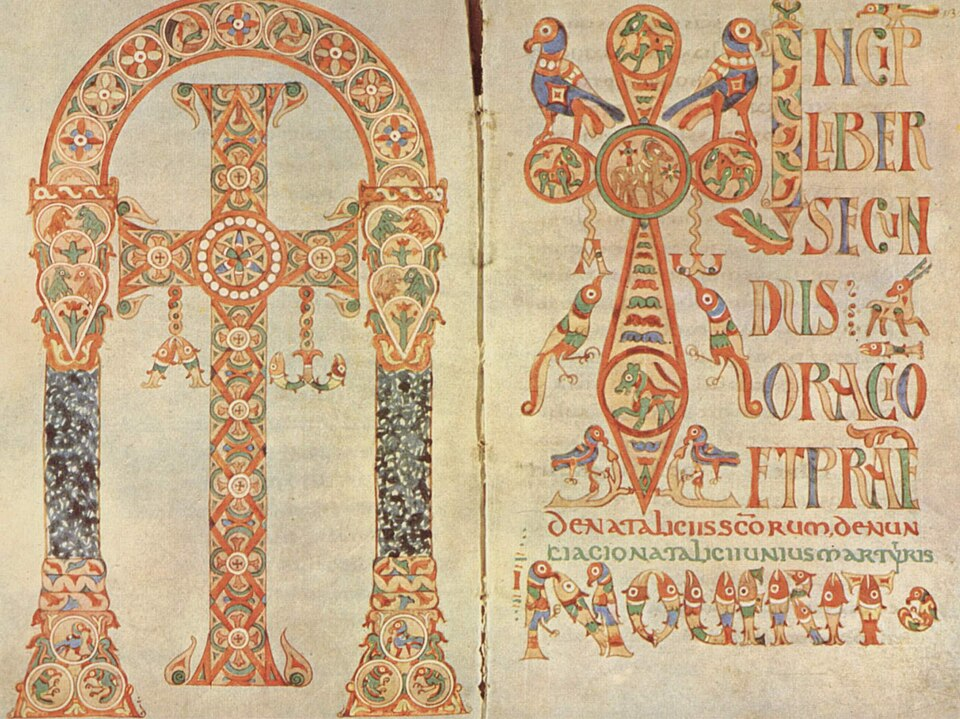
メロヴィング朝クローヴィスが改宗
金工と動物様式 - 800年
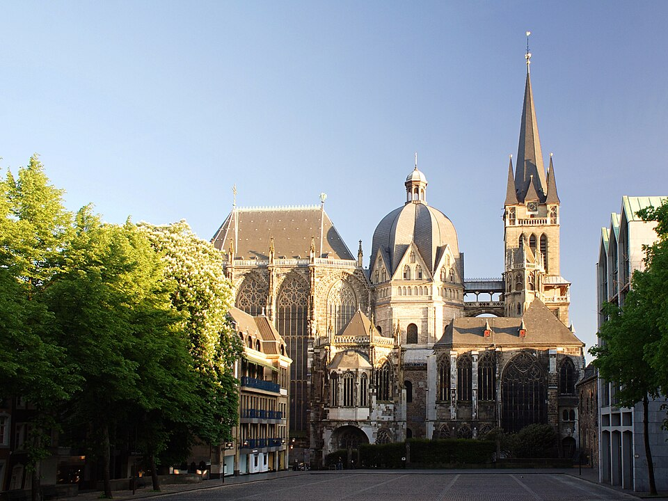
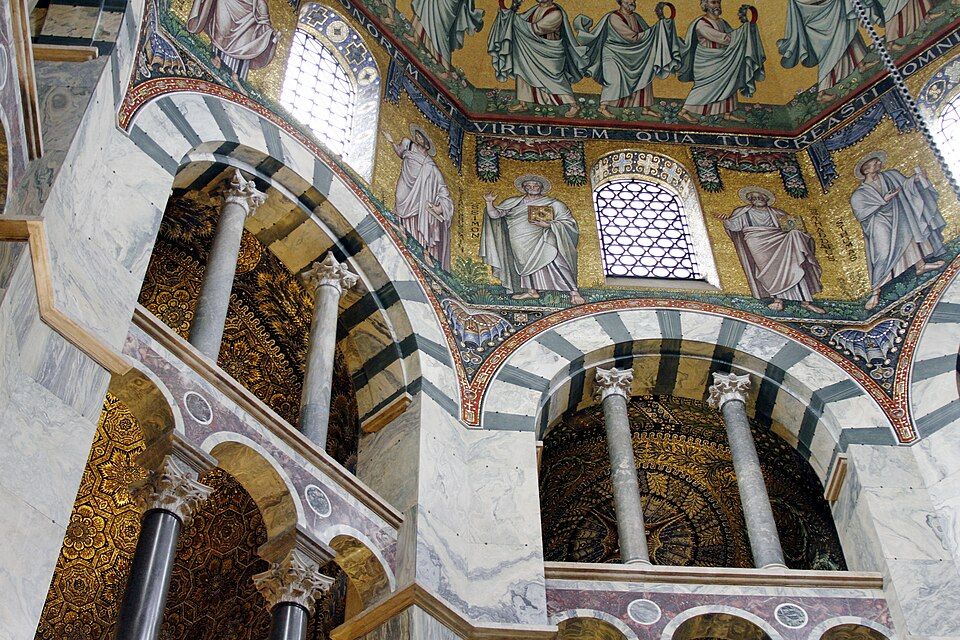
カール大帝の古代復興カロリング・ルネサンス
ビザンティンも手本に - オットー朝

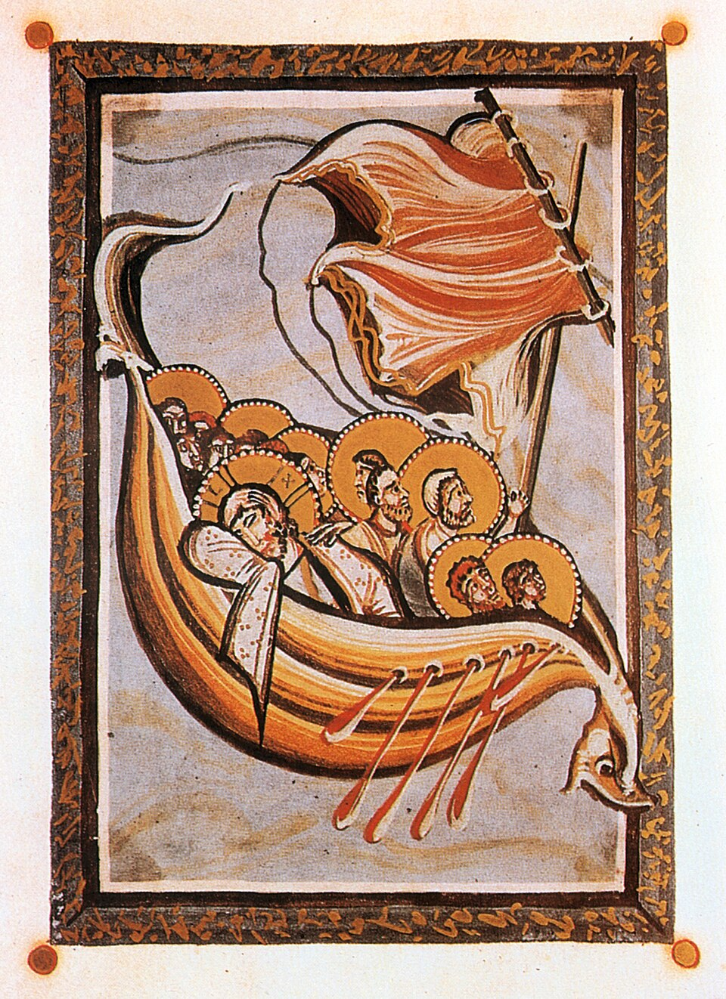
ビザンティンを強く加える神聖ローマ皇帝の時代
ライヘナウ派とケルン派 - 11世紀末頃〜
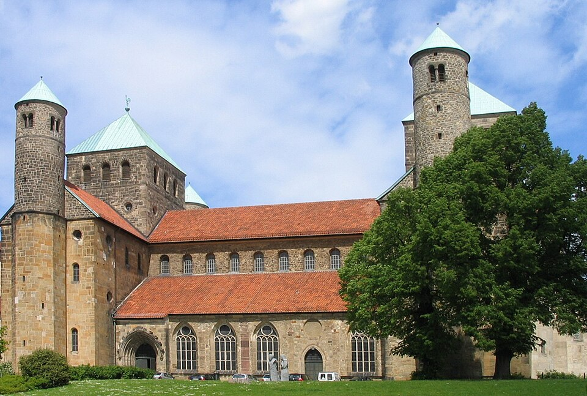
ロマネスク様式へオットー朝から波及
地域の美術がまとまる
図版の出典
- 《ゲラシウス聖礼典書、扉絵と冒頭頁（Reg.lat.316、fols.131v/132r）》作者不詳：出典（Public domain（The Yorck Project））
- 《アーヘン大聖堂（北側外観）》宮廷礼拝堂：オド・ド・メッス／後代増築：複数の建築家：出典（CC BY-SA 2.5）
- 《アーヘン大聖堂、宮廷礼拝堂内部のアーケード》建築：メッツのオドーとされる／近代内装：ヘルマン・シャーパーほか：出典（CC BY-SA 4.0（José Luiz Bernardes Ribeiro撮影））
- 《使徒たちの足を洗うキリスト（オットー3世の福音書）》作者不詳（ライヘナウ、リウタール工房）：出典（Public domain（PD-Art））
- 《ヒッダの福音書《嵐を鎮めるキリスト》（fol.117r）》作者不詳（ケルンの写本画家）：出典（Public domain（PD-Art／PD-old-100-expired））
- 《ヒルデスハイムの聖ミカエル聖堂》建築家不詳（ベルンヴァルト司教の委嘱）：出典（Public domain（Hildesiaによる権利放棄））
重要人物
フランク王国の王
- ヒルデリヒ1世王クローヴィス1世の父。その宝物が貴金属品の代表
- クローヴィス1世王国の創始者496年にカトリックへ改宗し、教会の後ろ盾を得る
- ピピンカロリング朝の祖教皇の支持で王となり、見返りに領土を寄進
- カール大帝西ローマ皇帝800年に皇帝の称号。文化でもローマを復興
- ルイ1世カール大帝の子死後、王国は843年に三分割される
- オットー1世オットー朝の祖ザクセン家。教皇から神聖ローマ皇帝の冠を授かる
そのほかの人物
肖像・図版の出典
中世のはじまり
ローマ帝国の分割と中世
動画 0:36～395年、ローマ帝国の皇帝テオドシウス1世が亡くなり、帝国は二人の息子に受け継がれました。広大な領土を支配する力がすでになかったため、東西に分けて統治することになったのです。当初は行政上の分割でしたが、後に東ローマ帝国と西ローマ帝国は別の国になりました。
コンスタンティノープルを首都とする東ローマ帝国、通称ビザンツ帝国は、皇帝と宗教を結びつけて強力な権力構造を築きました。1453年にオスマン帝国に滅ぼされるまで、約1000年間命脈を保っています。一方、西ローマ帝国は100年も経たずに滅亡しました。そこから15世紀のルネサンスまでの約1000年間は、一般に中世と呼ばれています。中世の美術は、初期中世、ロマネスク、ゴシックに分けて考えることができます。
民族移動と地域ごとの美術
動画 1:49～395年の帝国分割より少し前から、アジア系の遊牧民族フン族から逃れるため、ゲルマン民族が大移動し、各地に定住し始めていました。民族の移動方向には、西ローマ帝国の領土が多く接していました。東ローマ帝国も、後に隣接するイスラム国家との対立などに直面しますが、西の領土条件も厳しかったのです。
かつて西ローマ帝国だった地域は統一されず、さまざまな国が入り混じる状態になりました。大きく分けると、現在のフランスやドイツにあたる地域、スペイン・ポルトガルにあたるイベリア半島、イタリア半島、ブリテン諸島です。初期中世には、それぞれの地域で独自の美術が展開されました。
フランク王国の美術
クローヴィスとフランク王国
動画 2:47～現在のフランスやドイツにあたる地域では、ゲルマン民族の一派、フランク族が建国したフランク王国が重要です。5世紀末、現在のドイツ近辺に建国され、当初は小さな国家でしたが、9世紀には大きな領土を持つようになりました。
王国を築いたのはクローヴィス1世です。彼の創始した王朝は、祖父メロヴィクスの名にちなみ、メロヴィング朝と呼ばれます。486年のソワソンの戦いで、ローマ人のシアグリウスを倒し、領土を広げました。ローマ人の領土をゲルマン人が奪う形です。
改宗とローマ教会の後ろ盾
動画 3:31～領土を広げるうえで重要だったのが、496年のクローヴィスの改宗です。クローヴィス1世は、3000人の兵士とともに、キリスト教のローマ・カトリックへ改宗しました。それまでゲルマン民族の間では、多神教が信仰されていました。
戦いに負けたわけでもないのに改宗した理由には、ソワソンの戦いで得た領土に、もともと住んでいたローマ人が圧倒的に多かったことが挙げられます。ローマ人にフランク族の支配を受け入れてもらうため、キリスト教への改宗が必要だったという説が有力です。相手を改宗させるより、自ら相手の宗教に入る方が、支配を受け入れてもらいやすかったのでしょう。
改宗によって、ローマ教会の後ろ盾を得られたことも大きな意味を持ちました。西ローマ帝国崩壊後、保護者を失っていたローマ教会は、急速に勢力を伸ばすフランク王国に注目したのです。
クローヴィス以前にも、キリスト教に改宗したゲルマン人はいましたが、彼らは異端とされたアリウス派を信仰していました。アリウス派は、ここでは大まかに、イエス・キリストは神性を持たない人間とする派閥として説明されます。父なる神、子であるイエス、聖霊を同質とする三位一体説のアタナシウス派から、異端とされていました。ほかの国王がアリウス派に改宗したのに対し、クローヴィス1世はアタナシウス派に改宗した点が重要です。
アリウス派の説明について
本文の「神性を持たない人間」は、動画の大まかな説明を保持したものです。厳密には、父と子が同質か、子が造られた存在かという論争であり、単にイエスを普通の人間とする説との同一視には注意が必要です。
確認資料：カトリック教会のカテキズム465項
これにより、ローマ教会の支持を得るだけでなく、ほかのゲルマン人国家を異端として攻めるきっかけも得ました。507年には、イベリア半島から現在のフランス西部まで領土を持っていた西ゴート王国を破り、領土を拡大しています。敗れた西ゴート王国も、アリウス派を信仰するゲルマン人国家でした。メロヴィング朝のフランク王国は、ローマ教会に支持された唯一のゲルマン人国家、とまとめることができます。
貴金属工芸と動物様式
動画 5:27～メロヴィング朝では、ゲルマン人固有の美術とキリスト教美術が組み合わされました。特に重要だったのは貴金属工芸です。金属の下地に枠を作り、そこへ色ガラスを敷き詰めて焼く、クロワゾネという技法が用いられました。《ヒルデリヒ1世の宝物》は、代表的な貴金属品とされます。ヒルデリヒ1世は、メロヴィング朝を創始したクローヴィス1世の父です。

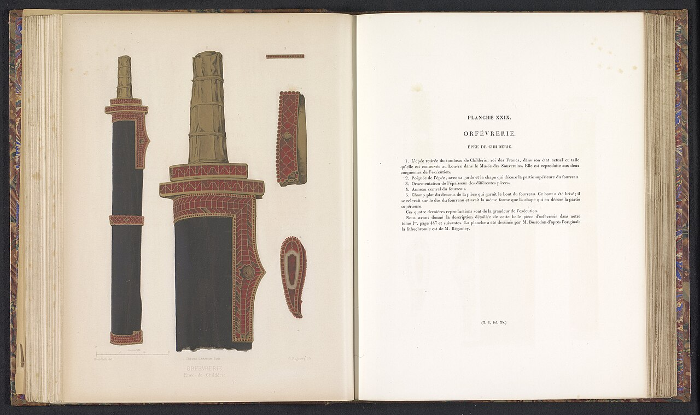
画像を拡大 ＋《ヒルデリヒ1世の墓出土の剣柄・鞘金具》
- 作者
- 作者不詳
- 制作時期
- 5世紀後半（480年頃）
- 所在地・所蔵
- フランス国立図書館、貨幣・メダル・古代遺物部門、パリ
- 素材・形式
- 金属・宝石工芸
出典・画像について
原品写真ではなく、19世紀刊行の図版集に収められたキルデリク1世の剣と鞘金具の複製図版（アムステルダム国立美術館所蔵の写真資料）。
画像出典：Rijksmuseum / Wikimedia Commons
CC0 · 複製図版
作品情報：画像出典・利用条件
制作メモ
動画345秒の原品写真と同じ金具群を描く。
クロワゾネ技法自体は、東ローマなどほかの地域でも使われていましたが、ゲルマン人は鳥獣や魚などをモチーフとすることが多かったとされます。これは、ゲルマン動物様式と呼ばれます。鳥獣や魚のモチーフは写本にも反映され、文字に動物を用いる独特な形式を生みました。幾何学的な様式と組み合わせたものもあります。

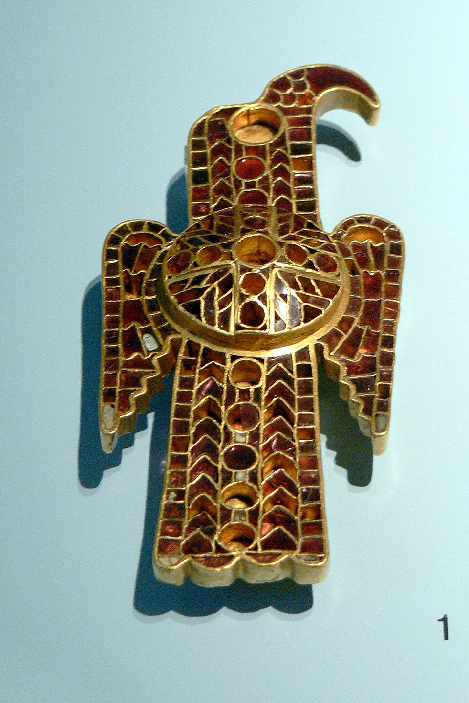
画像を拡大 ＋《ドマニャーノ出土の鷲形フィブラ》
- 作者
- 作者不詳（東ゴート）
- 制作時期
- 500年頃
- 所在地・所蔵
- ニュルンベルク、ゲルマン国立博物館、FG1608
- 素材・形式
- 金属・宝石工芸
出典・画像について

《ゲラシウス聖礼典書、扉絵と冒頭頁（Reg.lat.316、fols.131v/132r）》
- 作者
- 作者不詳
- 制作時期
- 8世紀、750年頃
- 所在地・所蔵
- ヴァチカン図書館、Reg.lat.316
- 素材・形式
- 写本挿絵・装飾
カール大帝と古代の復興
動画 6:25～メロヴィング朝の後を継いで、フランク王国にはカロリング朝が起こりました。初代国王ピピンの息子カール大帝の時に、最盛期を迎えます。800年、カール大帝はローマ教皇から西ローマ帝国皇帝の称号を受けました。
西ローマ帝国そのものはすでに滅んでいましたが、当時のフランク王国は、その帝国に引けを取らない領土を持っていました。さらに、ライバルのビザンツ帝国ではイコノクラスムが起こり、東西の教会が対立していました。ローマ教皇には、ビザンツ帝国に対抗できる強大な力を後ろ盾にする必要があったのです。
カール大帝は皇帝を名乗るだけでなく、文化の面でもローマを復興させようとしました。この運動を、カロリング・ルネサンスと呼びます。カロリング朝美術は、メロヴィング朝の伝統を引き継ぎながら、ローマ文化の復興を組み合わせたものでした。
アーヘンの建築と写本
動画 7:26～代表的な建築の一つに、現在のドイツのアーヘン大聖堂があります。集中式のドーム型教会で、古代ローマ建築を思わせるドームが印象的です。ラヴェンナのサン・ヴィターレ聖堂が手本となっています。ビザンティン美術を代表するモザイク《ユスティニアヌス帝と従者たち》が残る聖堂です。

《アーヘン大聖堂（北側外観）》
- 作者
- 宮廷礼拝堂：オド・ド・メッス／後代増築：複数の建築家
- 制作時期
- 宮廷礼拝堂800年頃／後代増築を含む
- 所在地・所蔵
- アーヘン、ドイツ
- 素材・形式
- 建築
出典・画像について

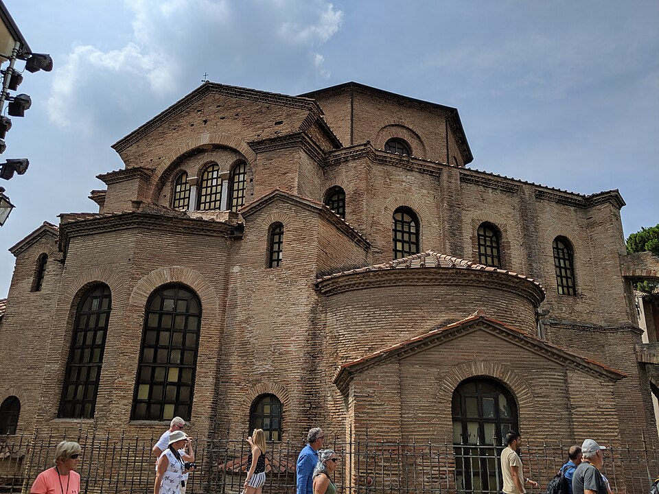
画像を拡大 ＋《サン・ヴィターレ聖堂（外観）》
- 作者
- 建築家不詳
- 制作時期
- 6世紀（547年献堂）
- 所在地・所蔵
- ラヴェンナ、イタリア
- 素材・形式
- 建築
出典・画像について
ラヴェンナは当初、東ローマ帝国の領土でしたが、8世紀後半にはフランク王国の領土になりました。8世紀以前の東ローマ由来の聖像のほとんどがイコノクラスムで破壊された一方、ここの作品が残ったのには、その当時フランク王国領であったことも関係するとされます。カロリング朝美術がビザンティンの影響を受けている背景です。
アーヘンの柱には、古代ギリシャやローマのコリント式が使われています。建築には、ビザンティンと古代ギリシャ・ローマを融合した形が見られます。写本の人物にも、古代ローマのような写実的な表現があります。一方、上部の動物はメロヴィング朝の美術を思わせます。古代ローマの復興と、それまでの美術との融合が見られるのです。

《アーヘン大聖堂、宮廷礼拝堂内部のアーケード》
- 作者
- 建築：メッツのオドーとされる／近代内装：ヘルマン・シャーパーほか
- 制作時期
- 宮廷礼拝堂800年頃／大理石被覆・周廊モザイク1900～1913年
- 所在地・所蔵
- ドイツ、アーヘン大聖堂
- 素材・形式
- 建築
出典・画像について

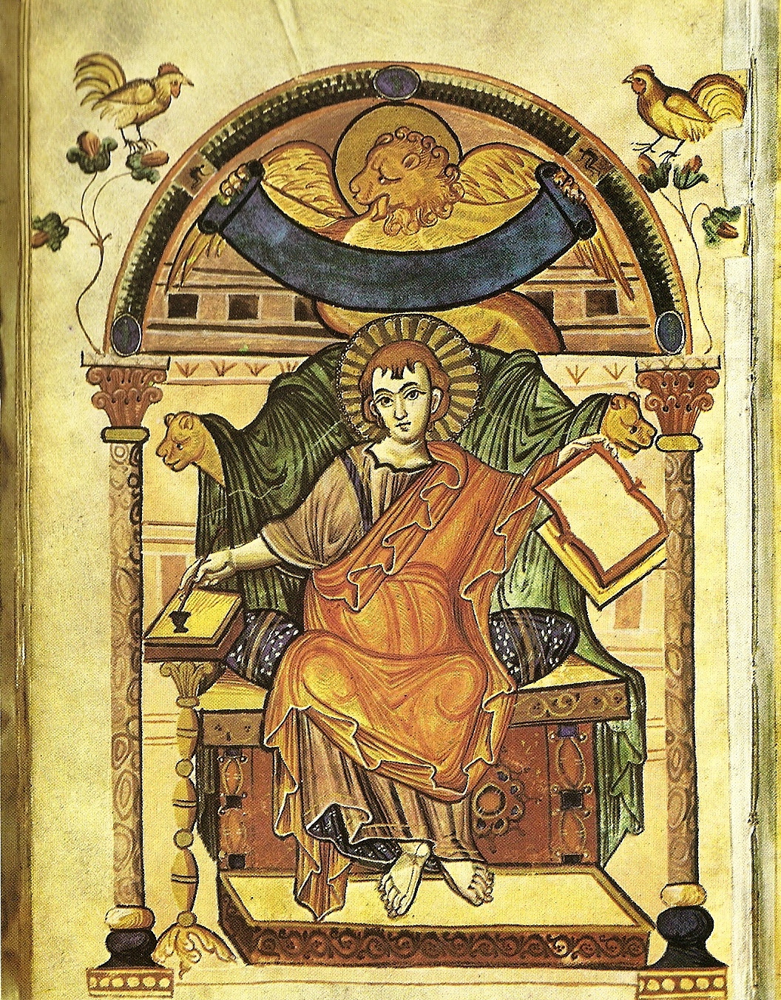
画像を拡大 ＋《福音書記者マルコ像（アダの福音書）》
- 作者
- 作者不詳（カロリング朝宮廷写本工房）
- 制作時期
- 800年頃
- 所在地・所蔵
- トリーア市立図書館（Hs 22）
- 素材・形式
- 写本挿絵・装飾
出典・画像について
フランク王国の三分割
動画 8:40～カール大帝の息子ルイ1世は、亡くなった次男を除く三人の息子に領土を分けようとしました。しかし、840年にルイ1世が亡くなると、長男ロタールが全土の掌握を図ります。これを三男ルイとシャルルが協力して阻み、843年のヴェルダン条約によって王国は三分割されました。
870年にはメルセン条約が結ばれ、中部の領土が狭まり、東西のフランク王国が領土を広げました。東フランク王国は現在のドイツ、中部はイタリア、西はフランスの原型です。
西フランク王国では、王位を継ぐ子孫がいずれも短命だったため王権が弱まり、ヴァイキングの略奪も加わって混乱しました。中部では領土が縮小してイタリア王国となり、その後は有力貴族が王を名乗って王国が乱立しました。こうして、西ローマ皇帝の地位は、東フランク王が引き継いでいくことになります。
オットー朝と二つの作風
動画 9:55～オットー朝では、また新たな美術が展開されました。ゲルマン人貴族のザクセン家のオットー1世が創始した王朝です。オットー1世の大きな強みは、ローマ教皇から神聖ローマ皇帝の冠を授かったことにありました。東フランク王国が神聖ローマ帝国となり、三つに分かれたフランク王国のうち、東の王国を教会がローマ帝国として認めた形です。
オットー朝美術は、カロリング朝の古代復興に、さらに強くビザンティンの影響を加えたものでした。服のひだを強調し、目を大きく見開いた威厳ある姿を表すなど、ビザンティンの伝統を思わせる作風を、ライヘナウ派と呼びます。一方、軽やかな色彩と動きのある表現を用いたのがケルン派です。どちらも、オットー朝を代表する作風です。
画像を拡大 ＋
《使徒たちの足を洗うキリスト（オットー3世の福音書）》
- 作者
- 作者不詳（ライヘナウ、リウタール工房）
- 制作時期
- 10世紀末～11世紀初頭（1000年頃）
- 所在地・所蔵
- ミュンヘン、バイエルン州立図書館、Clm 4453
- 素材・形式
- 写本挿絵・装飾
出典・画像について
複製・復原または刊行図版由来の画像です。原品そのものの現代写真とは区別しています。
画像出典：AnonymousUnknown author
Public domain（PD-Art）
作品情報：作品・画像・利用条件

《ヒッダの福音書《嵐を鎮めるキリスト》（fol.117r）》
- 作者
- 作者不詳（ケルンの写本画家）
- 制作時期
- 1000年頃（11世紀初頭）
- 所在地・所蔵
- ダルムシュタット大学・州立図書館、Hs 1640、fol.117r
- 素材・形式
- 写本挿絵・装飾
出典・画像について
複製・復原または刊行図版由来の画像です。原品そのものの現代写真とは区別しています。
画像出典：UnknownUnknown , from the Middle Ages
Public domain（PD-Art／PD-old-100-expired）
作品情報：作品・画像・利用条件
建築には、カロリング朝を引き継ぐものが残されています。やがてオットー朝から波及して、ロマネスクという新しい様式が生まれます。西ローマ帝国の崩壊後、メロヴィング朝、カロリング朝、オットー朝へと美術が引き継がれました。初期中世では、フランク王国が主役といえるでしょう。

《ヒルデスハイムの聖ミカエル聖堂》
- 作者
- 建築家不詳（ベルンヴァルト司教の委嘱）
- 制作時期
- 1010～1022年／1945年以後の復原を含む
- 所在地・所蔵
- ドイツ、ヒルデスハイム
- 素材・形式
- 建築
出典・画像について
イベリア半島・イタリア・アイルランド
イベリア半島と国土回復
動画 11:07～イベリア半島では、西ローマ帝国崩壊後、西ゴート王国が統治していました。507年にフランク王国に敗れて現在のフランス西部を失い、イベリア半島だけが領土となります。さらに、ユスティニアヌス帝のビザンツ帝国に南部を奪われ、711年にはイスラム国家ウマイヤ朝の侵攻を受けて滅亡しました。
キリスト教国家は半島北部へ追いやられましたが、その後、国土回復運動レコンキスタが始まりました。イスラム国家の領土を、キリスト教国家が奪い返していく運動です。
イスラムの影響とモサラベ様式
動画 11:59～こうしたなか、イベリア半島に生まれたのが、イスラムの影響を受けたキリスト教美術、モサラベ様式です。モサラベとは、キリスト教徒でありながら、文化的にはイスラム化した人を指します。そのもととなったイスラムの美術には、偶像崇拝を厳しく禁じるため聖像はないものの、派手な色使い、豪華な装飾、幾何学模様が見られます。

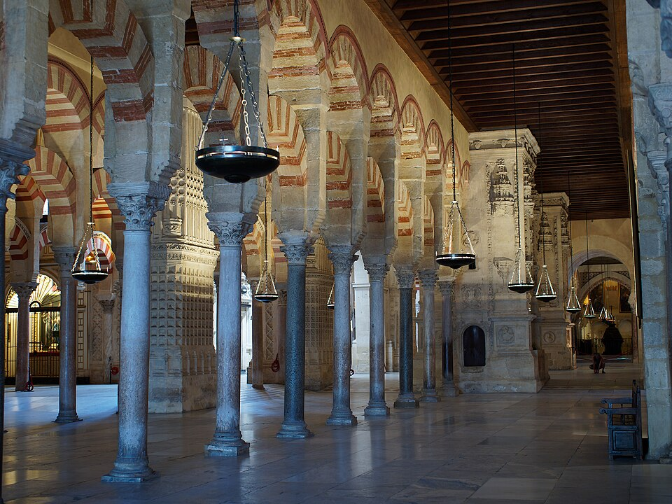
画像を拡大 ＋《コルドバのモスク＝大聖堂（メスキータ）内部の列柱と二段アーチ》
- 作者
- 作者不詳（複数時期の工匠）
- 制作時期
- 786年創建、以後増築・改修
- 所在地・所蔵
- コルドバ、アンダルシア、スペイン
- 素材・形式
- 建築
出典・画像について
作品情報：作品・画像・利用条件
モサラベ様式にも派手な色使いが現れ、特に写本に特徴がよく見られます。10世紀頃からその傾向が強まり、太い線と鮮やかな色彩が用いられました。
同じ個体・写本頁と利用可能な画像を確定できず掲載を保留しています。
《獣に乗るバビロンの大淫婦（写本・頁未確定）》
- 作者
- 未確定
- 制作時期
- 未確定
- 所在地・所蔵
- 未確定
- 素材・形式
- 写本挿絵・装飾
出典・画像について
同じ個体・写本頁と利用可能な画像を確定できず掲載を保留しています。
ピピンの寄進と教皇領
動画 12:34～イタリア半島では、初めは東ローマ帝国の領土としてビザンティン美術の影響を受け、8世紀後半からはフランク王国の支配と、その美術の影響を受けました。ただし、美術史上で無視できないのは、教皇領という領土が生まれたことです。
フランク王国がメロヴィング朝からカロリング朝へ移る時、ローマ教皇はカロリング朝を創始するピピンを支持しました。ピピンは、自らが仕えていたメロヴィング朝の王を退位させましたが、教皇の支持によってそれを堂々と行えたのです。見返りとして教皇に領土を提供した出来事を、「ピピンの寄進」と呼びます。
教皇領の税金はすべて教皇のものとなりました。これによってローマ教皇が強大な力を持つようになり、その財力が後の美術にも関わっていきます。
アイルランドの装飾写本
動画 13:34～ブリテン諸島では、東西ローマの争いと関係のなかったアイルランドの美術が特徴的です。432年、聖パトリックが布教したことで、キリスト教が広まったとされます。古くからケルト人の文化があった地域に、修道院を中心とするキリスト教文化が根付いたのです。
もともと、ラ・テーヌ文化には特徴的な幾何学模様がありました。キリスト教文化が加わり、模様はさらに複雑化しました。写本装飾には豪勢で抽象的な模様が強く現れています。三大ケルト装飾写本と呼ばれる《ダロウの書》《リンディスファーンの書》《ケルズの書》には、特徴的な模様があり、ひと目でアイルランド系の写本と分かるほどです。

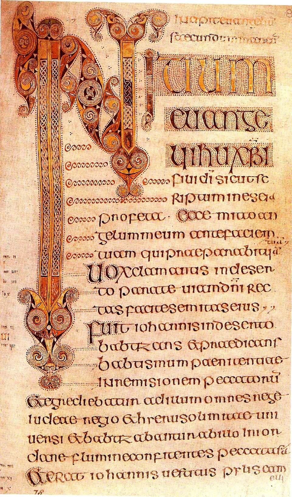
画像を拡大 ＋《ダロウの書、マルコ福音書冒頭（fol.86r）》
- 作者
- 作者不詳
- 制作時期
- 7世紀
- 所在地・所蔵
- トリニティ・カレッジ・ダブリン図書館、MS 57（A.IV.5）
- 素材・形式
- 写本挿絵・装飾
出典・画像について
複製・復原または刊行図版由来の画像です。原品そのものの現代写真とは区別しています。
画像出典：anonymous
Public domain（PD-Art／PD-old-100-expired）
作品情報：作品・画像・利用条件

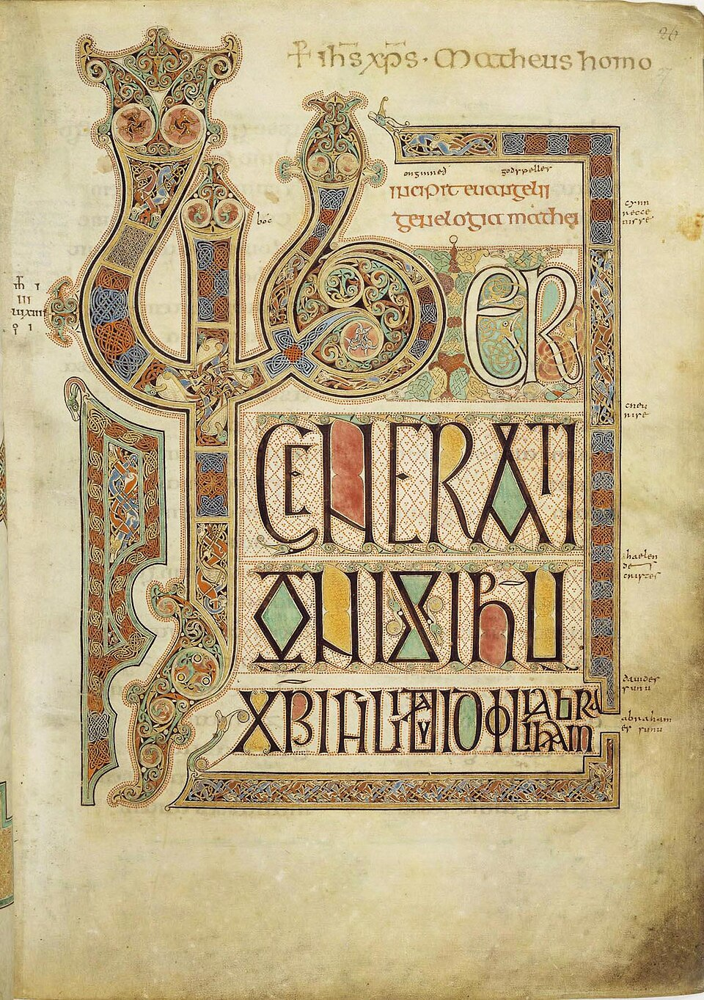
画像を拡大 ＋《リンディスファーン福音書、マタイ福音書冒頭（fol.27r）》
- 作者
- リンディスファーンのエアドフリスとされる
- 制作時期
- 8世紀初頭、700～720年頃
- 所在地・所蔵
- ロンドン、大英図書館、Cotton MS Nero D IV、fol.27r
- 素材・形式
- 写本挿絵・装飾
出典・画像について

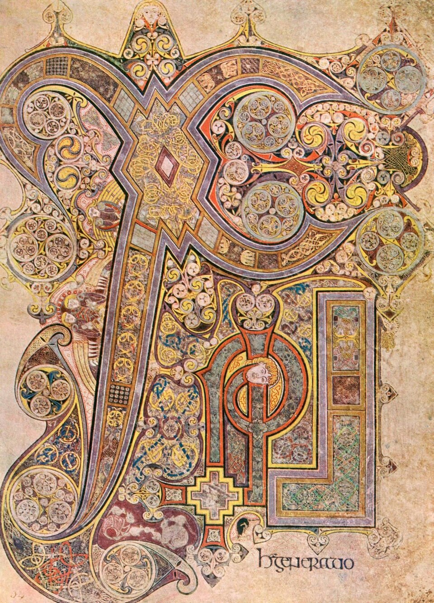
画像を拡大 ＋《ケルズの書《キ・ローのモノグラム》（fol.34r）》
- 作者
- 作者不詳（アイルランドまたはスコットランドの修道士）
- 制作時期
- 800年頃
- 所在地・所蔵
- ダブリン、トリニティ・カレッジ図書館、MS58（A.I.6）
- 素材・形式
- 写本挿絵・装飾
出典・画像について
複製・復原または刊行図版由来の画像です。原品そのものの現代写真とは区別しています。
画像出典：Wikimedia Commons
Public domain（PD-Art／PD-old-100）
作品情報：作品・画像・利用条件
ロマネスクへ
ロマネスク様式へ
動画 14:31～初期中世の西では、東のビザンティン美術とは対照的に、地域ごとにそれぞれの美術が展開されました。それが11世紀末頃から、ロマネスク様式という、ある程度まとまった形へ変化していきます。
要点まとめ
- 西ローマ帝国の滅亡から15世紀のルネサンスまでの約1000年間が中世で、その美術は初期中世、ロマネスク、ゴシックに分けられる。ゲルマン民族の大移動の後、旧西ローマ帝国の地域では地域ごとに独自の美術が展開した。
- フランク王国はクローヴィス1世が築き、その王朝はメロヴィング朝と呼ばれる。496年にアタナシウス派のローマ・カトリックへ改宗し、ローマ教会の支持を得た唯一のゲルマン人国家となった。
- メロヴィング朝では貴金属工芸が重要で、色ガラスを枠に敷き詰めるクロワゾネが用いられた（《ヒルデリヒ1世の宝物》）。鳥獣や魚をモチーフとするゲルマン動物様式が写本にも反映された。
- カロリング朝のカール大帝は800年に西ローマ帝国皇帝の称号を受け、ローマ文化を復興させた（カロリング・ルネサンス）。サン・ヴィターレ聖堂を手本としたアーヘン大聖堂が代表的な建築。
- フランク王国は843年のヴェルダン条約と870年のメルセン条約で分かれ、東はドイツ、中部はイタリア、西はフランスの原型となった。
- オットー1世のオットー朝で東フランク王国は神聖ローマ帝国となった。美術はビザンティンの影響を強め、威厳ある作風のライヘナウ派と、軽やかな色彩のケルン派がある。ここからロマネスクが生まれる。
- イベリア半島では711年にウマイヤ朝の侵攻で西ゴート王国が滅び、国土回復運動レコンキスタが始まった。イスラムの影響を受けたキリスト教美術がモサラベ様式。
- イタリアでは「ピピンの寄進」で教皇領が生まれ、ローマ教皇が強大な力を持った。
- アイルランドでは聖パトリックの布教後、ラ・テーヌ文化の幾何学模様が複雑化し、三大ケルト装飾写本《ダロウの書》《リンディスファーンの書》《ケルズの書》が生まれた。11世紀末頃からロマネスク様式へまとまっていく。
確認問題
答えを考えてから開いてください。選択問題は選ぶとすぐ正誤と解説が出ます（選択肢の順番は開くたびに変わります）。各問題のリンクから該当の章や作品カードへ戻れます。
選択問題：0／5問回答・正解0
A. 一問一答答えを考えてから開く
問1金属の下地に枠を作り、そこへ色ガラスを敷き詰めて焼く、メロヴィング朝の貴金属工芸で用いられた技法は何か。
答えを見る
問2800年に西ローマ帝国皇帝の称号を受けたカール大帝が進めた、文化面でのローマ復興運動を何と呼ぶか。
答えを見る
問3キリスト教徒でありながら文化的にはイスラム化した人々に由来する、イベリア半島のキリスト教美術の様式は何か。
答えを見る
B. 4択選ぶとすぐ正誤と解説
問4496年にクローヴィス1世が改宗し、ローマ教会の支持を得るきっかけとなった派はどれか。
→ 本文で確認（改宗とローマ教会の後ろ盾）
問5843年にフランク王国を三分割した条約はどれか。
→ 本文で確認（フランク王国の三分割）
問6ローマ教皇がピピンを支持した見返りに、ピピンが教皇へ領土を提供した出来事を何と呼ぶか。
→ 本文で確認（ピピンの寄進と教皇領）
C. 図版問題画像を見て答える
問7この写本の名前を答えよ。これを含む三つの写本はまとめて何と呼ばれるか。
答えを見る
問8この建築の名前はどれか。
→ 作品カードで確認
問9服のひだを強調し、目を大きく見開いた威厳ある姿で描かれたこの挿絵に見られる、オットー朝の作風はどれか。
→ 作品カードで確認